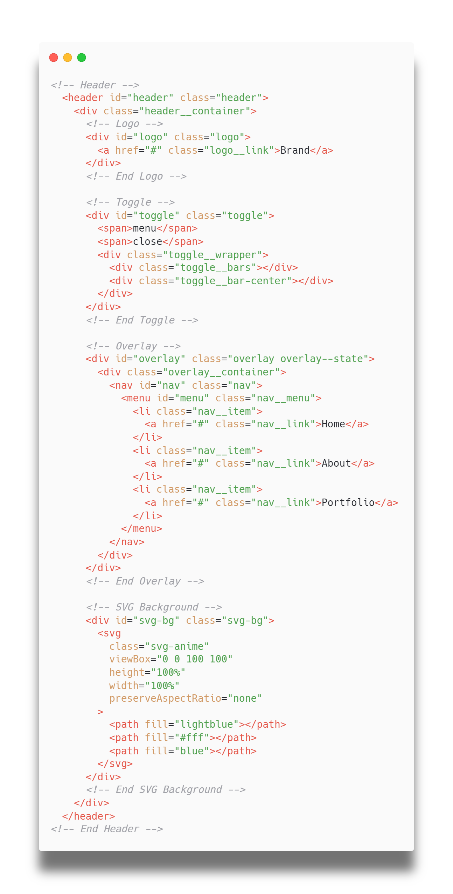

Created: 12/02/2021
By: Vere Absolutum
Email: sergiopile3@gmail.com
Thank you for purchasing my theme. If you have any questions that are beyond the scope of this help file, please feel free to email via my user page contact form here. Thanks so much!
Hi, once more, thank you so much for purchasing this product. In this page you can find how it works and the possibilities that the navkit overlay menu has.
One thing you need to know is that you will receive all the animations present in the preview. You can use the same settings for those animations or edit something to better adjust it to your project.
All the default animations is placed inside the dist folder. There you can find 4 HTML files and 4 javascript files (excluding the anime.min.js file). the custom javascript to create the background animation has the same name that of the HTML file and all HTML needs the anime.min.js file to work.
Files names and relations:
Finally, to use the Navkit Overlay Menu, you just need to copy the HTML structure to your project and also place the anime.min.js and related javascript file (in this order) inside your project folder.
After that, check if you create the script tag for each javascript file inside your body tag.
This theme is a fixed layout with four components: toggle, logo, overlay and SVG background. All of the components within the header content area is nested within a div container with an class of "header__container. The general template structure is the same throughout the templates. Here is the general structure.
If you would like to edit the color, font, or style of any elements within the header you would do the following:
nav links
#header a {
color: #someColor;
}
burger labels
#header .toggle span {
color: #someColor;
}
for the burger bars colors
#header .toggle-bar {
background-color: #someColor;
}
If you want to edit the color of the components when the overlay is opened you will do the following:
nav links
#overlay.is-opened a {
color: #someColor;
}
bugger labels
#overlay.is-opened .toggle span {
color: #someColor;
}
for the burger bars colors
#overlay.is-opened .toggle-bar {
background-color: #someColor;
}
If you find that your new style is not overriding, it is most likely because of a specificity problem. Scroll down in your CSS file and make sure that there isn't a similar style that has more weight.
So, to ensure that your new styles are applied, make sure that they carry enough "weight" and that there isn't a style lower in the CSS file that is being applied after yours.
There are four skins in this themes. The skins classes change the color of the texts and toggle button. Below you can see each of them and how they work
To apply the skin you need to place the skin class in the div component with a class named header. See an example below.
<div id="header" class="header header--black"> #headerContent </div>
I'm using one CSS files in this theme with the name navkit.min.css.
The file contains all of the specific stylings for the page. The file is separated into sections using:
/* === Header === */ some code /* === Toggle === */ some code /* === Logo === */ some code /* === Overlay === */ some code /* === Nav === */ some code /* === SVG Bg === */ some code
If you would like to edit a specific section of the site, simply find the appropriate label in the CSS file, and then scroll down until you find the appropriate style that needs to be edited.
You will receive all the navkit overlay menu animations that appeared in the preview. All of those animations will be placed inside the dist folder. Inside of the dist folder you will find 4 html files and 4 javascript (excluding the anime.min.js file).
This theme uses two Javascript files.
If you want to edit and change some of the animation's features you will do the following:
Inside the javascript file you will use you can search for settings, in the 'section: IMPLEMENTATION', and you will find the following structure:
/** SVG animation settings */
var settings = {
// it inverses the animation direction if it is true [true/false]
inverse: false,
// it changes the orientation of the animation [h (horizontal)/ v (vertical)]
orientation: 'v',
// number of division the the wave will have to create the shapes [1...+]
crestNumber: 1,
// the max amplitude value for the wave in milliseconds [1...+]
maxAmplitude: 1100,
// duration of the animation without delays in milliseconds [1...+]
duration: 800,
// the function used to create the shapes [square, sin, random]
shapeFunction: sin,
// the svg path elements [array]
paths,
// the delay value of each wave (svg path) to be animated in milliseconds [1...+]
waveDelay: 100
}
If you want to used the default settings seen in the preview, you will receive a javascript with the default settings for each of those animation that you can find inside the main zip file.
I've used SCSS to create the css style for this theme, and doing so the processes of customization becomes much easier.
If you want to know more about SCSS you can go to the following link here
I've used the following images, icons or other files as listed.
Once again, thank you so much for purchasing this theme. As I said at the beginning, I'd be glad to help you if you have any questions relating to this theme. No guarantees, but I'll do my best to assist. If you have a more general question relating to the themes on ThemeForest, you might consider visiting the forums and asking your question in the "Item Discussion" section.
Vere Absolutum